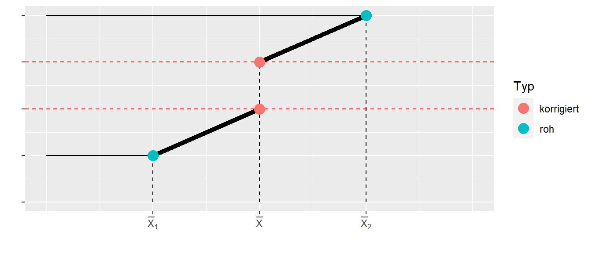

25 ANCOVA
In den vorhergehenden Kapiteln zu CRD bzw. CRFD haben wir uns angeschaut, wie wir den Einfluss einer oder mehrerer nominaler, unabhängiger Variablen auf eine abhängige Variable modellieren können. In diesem Zusammenhang haben wir uns auch mit der Varianzzerlegung auseinandergesetzt und immer wieder gesehen, dass diese Zerlegung auch als der Vergleich von verschiedenen Modellen miteinander betrachtet werden kann. Im Rahmen der ANCOVA führen wir jetzt wieder eine kontinuierliche Variable in unser Modell ein, wie wir das schon im Rahmen der multiplen linearen Regression getan haben. Diese zusätzliche, kontinuierliche Variable spielt dabei die Rolle einer Kontrollvariablen. Mit Hilfe dieser Kontrollvariable soll ebenfalls Varianz von \(Y\) erklärt werden. Der Effekt der Kontrollvariablen auf \(Y\) ist allerdings nicht das Primärinteresse der Untersuchung sondern dient nur die Präzision des Modells zu erhöhen. Letztendlich führt dies dazu, dass auch die Power der Untersuchung erhöht wird.
Ein Beispiel könnte eine Untersuchung zu Trainingseffekten sein. Aus der Literatur wissen wir bereits, das das Alter der Teilnehmerinnen und Teilnehmer eine Rolle auf den Trainingseffekt hat. Daher macht es Sinn für den Effekt des Alters im Rahmen der Modells zu kontrollieren. Das primäre Interessiere der Untersuchung liegt auf dem Effekt des Trainings. Die Variable Alter wird in diesem Fall als Kovariate bezeichnet, wodurch sich auch die Namensgebung ANCOVA als Abkürzung für Analysis of Covariance herleitet. Welche Variablen die Rolle der primären Variablen und der Kovariaten spielen ist dabei von der konkreten Untersuchung abhängig. Es kann genauso vorkommen, dass eine nominale Variable die Rolle der Kovariaten spielt und eine kontinuierliche Variable die Primärvariable der Untersuchung ist.
Konzeptionell wird durch die Integration einer Kovariaten Information über Unterschiede zwischen den beiden Gruppen die vor der Beobachtungsphase bestehen in das Modell mit einbezogen. D.h. trotzdem wir die Beobachtungseinheiten randomisiert in beispielsweise zwei Gruppen unterteilt haben, wissen wir, das das Alter einen Effekt auf die abhängige Variable hat. Bei einer perfekten, randomisierten Zuweisung sollte das Alter eigentlich keinen mehr Einfluss haben, da beide Gruppen die gleiche Altersstruktur haben sollten. Trotzdem sind wir in der Lage die Einbeziehung zusätzliche Varianz aufzuklären und können so den Effekt der Primärvariablen hoffentlich besser isolieren. Oft kann zum Beispiel der Startwert der abhängigen Variable als Kovariate verwendet werden. Die Kovariate ist dann auf der gleichen Skala wie die Zielvariable.
Beispiel 25.1 In Fien u. a. (2019) wurde unter anderem der Einfluss einer Trainingsintervention auf die Gehgeschwindigkeit in einem zweiarmigen Untersuchungsdesign untersucht. Als Zielvariable wurde die Gehgeschwindigkeit nach der Interventionsphase verwendet. Um die bestehenden Unterschiede zwischen den Teilnehmerinnen und Teilnehmer vor der Untersuchung mit einzubeziehen, wurde die Gehgeschwindigkeit vor der Intervention als Kovariate verwendet.
Definition 25.1 (Kovariate) Eine Kovariate ist eine Variable, die verwendet wird, um den Einfluss auf die abhängige Variable zu kontrollieren um genauere Schätzungen der Beziehungen zwischen den primären unabhängigen Variablen und der abhängigen Variable zu erhalten.
Alternativ werden in der Literatur auch die Begriffe Störvariable (engl. nuisance factor) oder concomitant variable (engl.) verwendet. Wenn die Kovariate auf der gleichen Skala wie die Primärvariable ist, wird sie auch als commensurate (engl.) bezeichnet.
Beginnen wir mit einem einfachen konzeptionellen Modell (siehe Abbildung 25.1).
Abbildung 25.1 zeigt den Zusammenhang zwischen zwei Gruppen \(A\) und \(B\) und einer abhängigen Variablen DV sowie den Zusammenhang einer Kovariate (\(x\)-Achse) mit DV. Zwischen der Kovariaten und der DV besteht ein positiver Zusammenhang und der Effekt von Treatment \(A\) ist kleiner als derjenige von Treatment \(B\). Der Effekt der Kovariaten ist dabei in beiden Gruppen gleich und es besteht keine Interaktion zwischen der Kovariaten und den Gruppen. Dies führt dazu, dass die beiden Geraden parallel zueinander sind. Letztendlich haben wir dieses Modell schon bei der Besprechung der Intergration von nominalen Variablen in das multiple Regressionsmodell behandelt.
Wenn wir die beiden Gruppen miteinander vergleichen sind mehrere unterschiedliche Vergleiche möglich. Nehmen wir zum Beispiel einen Datenpunkt \(P1\) aus Gruppe \(A\). Dann können wir den \(P1\) mit mehreren verschiedenen Datenpunkten aus Gruppe \(B\) vergleichen. In Abbildung 25.2 sind drei mögliche Vergleiche eingezeichnet.

Letztendlich erscheint aber nur einer der Vergleiche sinnvoll, nämlich der Vergleich wenn die beiden Gruppenwerte den gleichen Wert in der Kovariate haben. Wäre zum Beispiel die Kovariate das Alter, dann würde ein Vergleich von zwei Personen die sich im Alter unterscheiden wenig sinnvoll da nicht klar ist ob ein beobachteter Unterschied zwischen den beiden Personen in der abhängigen Variable auf den Unterschied im Alter oder auf den Unterschied im Treatment zurück zu führen ist. Genau dieses Problem wird mit Hilfe der ANCOVA gelöst. Die ANCOVA liefert daher eine Antwort auf die Frage:
Wie unterschieden sich die Gruppen voneinander, wenn sie die gleichen Werte in der Kovariate hätten?
Schauen wir uns ein weiteres Beispiel an. In Abbildung 25.3 sind diesmal Datenpunkte eingezeichnet und scheinbar ist bei der Zuweisung der Teilnehmerinnen und Teilnehmer etwas grundsätzlich schief gelaufen.
Die Personen in Gruppe \(B\) haben alle einen kleineren Wert in der Kovariate als die Personen in Gruppe \(A\). Gleichzeitig hat die Kovariate aber einen positiven Einfluss auf die DV. Hätte wir keine Information über die Kovariate und würden die beiden Gruppenmittelwerte miteinander vergleichen, dann würden wir wahrscheinlich keinen Unterschied zwischen den beiden Gruppen finden (siehe Abbildung 25.4).
Um die beiden Gruppen miteinander vergleichen zu können, müssen wir die Unterschiede in den Mittelwerten der Kovariaten korrigieren um die Gruppen miteinander vergleichbar zu machen. D.h. wie würden die Unterschied aussehen, wenn beide Gruppen die gleiche Verteilung in der Kovariaten hätten.
In Abbildung 25.5 sind die eigentlich sinnvollen Vergleiche angezeigt. Dabei wird auch noch einmal klar, dass in diesem Modell sobald wir für die Werte der Kovariaten kontrolliert haben, die Position des Vergleichs unerheblich ist, da wir von einem Modell ausgehen, bei dem der Effekt der Kovariaten in beiden Gruppen gleich ist. Dies führt zu den parallelen Linien.
25.1 Das Modell
Übertragen wir die Beispiele nun wieder in eine Modellformulierung. Letztendlich können wir, wie bereits angemerkt, das uns schon bekannte Modell aus der multiple linearen Regression anwenden.
\[\begin{equation} Y_{it} = \mu + \tau_i + \beta x_{it} + \epsilon_{it} \quad \epsilon_{it} \sim \mathcal{N}(0,\sigma^2), i = 1,\ldots,K \label{eq-ed-ancova-model} \end{equation}\]
In Model \(\eqref{eq-ed-ancova-model}\) kommt dementsprechend nichts Neues dazu, sondern unser bekanntes lineares Modell. Der einzige Unterschied besteht in der Terminologie, während wir vorher \(\alpha_i\) für die nominale Variable verwendet haben, wird der nominale Faktor im ANCOVA-Modell \(\tau_i\) bezeichnet. Das sind aber nur Unterschiede in den Buchstaben die leider auch in der Literatur unterschiedlich verwendet werden.
Um die spätere Interpretation der Koeffizienten zu vereinfachen, wird auch oft ein in der Kovariaten zentriertes Modell verwendet. Dies hat jedoch keine Auswirkung auf das Ergebnis. Von den Werten der Kovariate wird dazu der Gesamtmittelwert \(\bar{x}_{..}\) der Kovariatenwerten abgezogen.
\[\begin{equation} Y_{it} = \mu + \tau_i + \beta (x_{it} - \bar{x}_{..}) + \epsilon_{it} \label{eq-ed-ancova-model-c} \end{equation}\]
Ein interessante Interpretation der ANCOVA erhalten wir, wenn wir in Formel \(\eqref{eq-ed-ancova-model-c}\) auf beiden Seiten \(\mu + \tau_i\) abziehen (siehe (Casella 2009, p.65)).
\[\begin{equation*} Y_{it} - \beta (x_{it} - \bar{x}_{..}) = \mu + \tau_i + \epsilon_{it} \end{equation*}\]
Auf der linken Seite stehen die Residuen einer einfachen Regression, die Differenz der beobachteten Werte \(Y_{it}\) von denen mittels der Regression auf die Kovariate vorhergesagten Werten \(\beta (x_{it} - \bar{x}_{..}\). Auf der rechten Seite haben wir das Modell der CRD. D.h. durch die ANCOVA werden die beobachteten Werte \(Y_{it}\) korrigiert und dadurch deren Varianz reduziert.
Da es sich bei der ANCOVA aber insgesamt wieder nur um eine Variante des linearen Modell handelt, ergeben sich entsprechend auch keine unbekannten Voraussetzungen:
- Experimental units sind randomisiert den \(K\) Gruppen zugewiesen worden
- Varianz \(\sigma^2\) ist konstant über Gruppen und Werte der Kovariate
- Die Kovariate und das Treatment sind statistisch unabhängig voneinander
Der letzte Punkte, die Unabhängigkeit zwischen dem Treatment und der Kovariate ist wichtig. Dies bedeutet, dass der Einfluss der Kovariaten sind nicht im Zusammenhang mit dem Treatment verändert. Der der ANCOVA zugrundeliegende Test beruht dann wie immer auf einen Modellvergleich eines vollen Modell (Model \(\eqref{eq-ed-ancova-model}\)) mit einem reduzierten Modell. Das reduzierte Modell beinhaltet dann nur die Kovariate, da wir den Unterschied in Bezug auf den Effekt der Primärvariable überprüfen wollen.
\[\begin{align*} y_{ij} &= \mu + \tau_{j} + \beta X_{ij} + \epsilon_{ij} \quad \text{full} \\ y_{ij} &= \mu + \beta X_{ij} + \epsilon_{ij} \quad \text{reduced} \end{align*}\]
Die \(H_0\) für den Treatmenteffekt ist:
\[\begin{equation*} H_0: \tau_1 = \tau_2 = \cdots = tau_K = 0 \end{equation*}\]
Der Unterschied zwischen den Treatmentstufen wird dabei für den Wert \(\bar{x}_{..}\), als den Mittelwert der Kovariate über alle Gruppenhinweg bestimmt.
Die \(H_0\) für die Kovariate ist:
\[\begin{equation*} H_0: \beta = 0 \end{equation*}\]
Das Ergebnis der Analyse wird oft auch in Form einer Varianz-Tabelle dargestellt (siehe Tabelle 25.1).
| Term | \(df\) | \(SSQ\) | \(MSQ\) | F |
|---|---|---|---|---|
| \(T|\beta\) | \(K-1\) | \(ss(T|\beta)\) | \(\frac{ss(T|\beta)}{K-1}\) | \(\frac{ms(T|\beta)}{msE}\) |
| \(\beta|T\) | \(1\) | \(ss(\beta|T)\) | \(\frac{ss(\beta|T)}{1}\) | \(\frac{ms(\beta|T)}{msE}\) |
| Error | \(N-K-1\) | \(ssE\) | \(msE\) |
Die Schreibweise \(T|\beta\) bezeichnet den Effekt des Treatments nachdem für die Kovariate kontrolliert wurde während \(\beta|T\) den Effekt der Kovariate nachdem für das Treatment kontrolliert wurde beschreibt. Hier tritt eine Besonderheit auf, die Summe der Quadratsummen addiert sich nicht zur totalen Varianz von \(Y\). Dies kommt dadurch zustande das die Quadratsummen nicht der Hierarchie folgend vom einfachsten zum vollen Modell gebildet werden, sondern Vergleiche zwischen dem vollen Modell und jeweils einem Modell bei dem die andere Variable bereits vorhanden ist durchgeführt werden. Diese Quadratsummen werden als korrigierte Quadratsummen (adjusted sums of squares) (Christensen 2018, p.362) oder auch Type-II Quadratsummen bezeichnet. Dadurch verlieren die Quadratsummen ihre additive Eigenschaft. Im Spezialfall wenn beide Gruppen den gleichen Mittelwert in der Kovariaten \(X\) haben, sind die Quadratsummen dann doch wieder additive. Die beiden Effekt Treatment und Kovariate sind dann orthogonal zueinander.
Schauen wir uns die Analyse in einem Spielzeugbeispiel an. In Tabelle 25.2 ist ein Beispieldatensatz aus Maxwell, Delaney, und Kelley (2004) abgebildet.
| ID | Gruppe | x | y |
|---|---|---|---|
| S1 | TRT | 1 | 4 |
| S2 | TRT | 2 | 9 |
| S3 | TRT | 3 | 8 |
| S4 | CON | 3 | 12 |
| S5 | CON | 4 | 11 |
| S6 | CON | 5 | 16 |
Wir haben zwei Gruppen (TRT und CON) mit jeweils \(N = 3\) mit einer Kovariate \(x\).
Ein Vergleich des vollen und des reduzierten Modells führt zu folgendem Ergebnis:
| term | df.residual | rss | df | sumsq | statistic | p.value |
|---|---|---|---|---|---|---|
| y ~ x | 4 | 14.4 | ||||
| y ~ x + group | 3 | 12.0 | 1 | 2.4 | 0.6 | 0.495 |
Wie wir Tabelle 25.3 sehen können finden wir keinen statistisch signifikanten Effekt für das Treatment nachdem wir für die Kovariate \(X\) kontrolliert haben. Dargestellt als Varianztabelle erhalten wir die folgende Dokumentation (siehe Tabelle 25.4):
| Term | SSQ | df | MSQ | F | p-Wert |
|---|---|---|---|---|---|
| x | 16.0 | 1 | 16.0 | 4.0 | 0.139 |
| group | 2.4 | 1 | 2.4 | 0.6 | 0.495 |
| Residuals | 12.0 | 3 | 4.0 |
Hier finden wir ebenfalls keinen statisch signifikaten Effekt für beide Variablen, die Wert für die Treatmentvariable sind in beiden Tabellen gleich. Schauen wir uns die Summe der Quadratsummen an.
\[ SSQ_x + SSQ_{\text{group}} + SSE = 16+2.4+12 = 30.4 \]
Aber die totale Quadratsumme von \(y\) ist \(SST = 82\). D.h. die Summer der Quadratsummen addiert sich nicht zu \(SST\).
Schauen wir aber rein interessehalber an, was passiert wenn wir den Treatmenteffekt gegen ein auf den \(y\)-Achsenabschnitt reduziertes Modell testen. Wir ignorieren die Information aus der Kovariate.
| term | df.residual | rss | df | sumsq | statistic | p.value |
|---|---|---|---|---|---|---|
| y ~ 1 | 5 | 82 | ||||
| y ~ group | 4 | 28 | 1 | 54 | 7.7143 | 0.0499 |
In Tabelle 25.5 haben wir nun einen statistisch signifikanten Effekt gefunden. Wie kann das denn sein? Schauen wir uns dazu eine graphische Darstellung der Daten an (siehe Abbildung 25.6).
In Abbildung 25.6 können wir sehen, dass die beiden Gruppen sich deutlich in der Kovariate \(x\) voneinander unterscheiden. Dies führt dazu, dass die Mittelwerte der beiden Gruppen auch entsprechend unterschiedlich voneinander sind. Dadurch führt ein Test für den Unterschied zwischen den beiden Gruppen dazu, dass es zu einem statistisch signifikanten Ergebnis für das Treatment kommt. Letztendlich wird dieser Unterschied nur durch die Kovariate verursacht. Wird für die Kovariate kontrolliert, dann verschwindet der Effekt (siehe Abbildung 25.7).
In Abbildung 25.7 sehen wir, dass wenn die beiden parallen Geraden für die Kovariate auf Basis des ANCOVA-Modells eingefügt werden, dann ist der Unterschied zwischen den beiden Gruppen deutlich geringer. Dies betont noch einmal, dass ein Vergleich nur sinnvoll ist, wenn das level der Kovariaten zwischen den beiden Gruppen gleich ist. Es wird in diesem Fall dann von adjusted means \(\bar{Y}_l'\) gesprochen. Dazu wird der Mittelwert \(\bar{X}_{..}\) der Kovariaten \(X\) über alle Gruppen gebildet und dann der Effekt der Gruppe berechnet.
\[\begin{equation*} E[\bar{Y}_{i.}] = \mu + \tau_i + \beta\bar{x}_{..} \label{eq-ed-ancova-adjusted-mean} \end{equation*}\]
Im Beispiel werden die Gruppen daher wie folgt miteinander verglichen (siehe Abbildung 25.8)
Wie wir an dem Beispiel sehen konnten, führt die Kombination von Mittelwerten in der Kovariaten \(X\) dazu, dass der Effekt kleiner wird nachdem für die Kovariate kontrolliert wurde. Dies ist nicht immer der Fall sondern hängt davon ab, wie groß der Effekt ist und wie die Anordnung der Mittelwerte \(\bar{X}_j\) in den Gruppen ist.
In Abbildung 25.9 ist der Fall noch mal etwas klarer dargestellt.

Wir haben einerseits die einfachen, rohen Gruppenmittelwerte und die korrigierten Mittelwerte. In Abbildung 25.9 sind die einfachen Mittelwerte weiter auseinander entfernt als die korrigierten Mittelwerte. Daher wird der Effekt nach der Korrektur kleiner. Es kann aber auch der gegensätzliche Effekt eintreten. In Abbildung 25.10 ist dafür ein vereinfachtes Beispiel dargestellt.
In Abbildung 25.10 sind die einfachen Gruppenmittelwerte näher zusammen als dies der Fall bei den korrigierten Mittelwerten der Fall. Darin können wir sehen, dass nicht immer direkt klar ist in welche Richtung sich die Effekte verändern, wenn für eine Kovariate kontrolliert wird. Die Veränderung des Effekts hängt mit dem Zusammenhang zwischen der Kovariate und der abhängigen Variable \(\beta\), dem Abstand der Mittelwerte der Kovariate \(\bar{X}_i\) in den Gruppen und natürlich dem tatsächlichen Effekt \(\tau_i\) zusammen.
25.2 Analyse einer ANCOVA in R
Für die Analyse in R können wir die üblichen Herangehensweise mittels lm() verwenden. Einzig, wenn wir die Varianztabelle nach dem Muster in Tabelle 25.1 erzeugen wollen und nicht von Hand die Modellvergleiche durchführen wollen, müssen wir auf die Funktion ANOVA() aus dem package car zurückgreifen. Beispielweise für das Spielzeugbeispiel (Daten sind im tibble bw) ergibt sich der folgende Code:
mod <- lm(y ~ group + x, bw)
car::Anova(mod)Anova Table (Type II tests)
Response: y
Sum Sq Df F value Pr(>F)
group 2.4 1 0.6 0.4950
x 16.0 1 4.0 0.1393
Residuals 12.0 3 Über die Modellvergleiche:
mod_full <- lm(y ~ group + x, bw)
mod_r1 <- lm(y ~ group, bw)
mod_r2 <- lm(y ~ x, bw)
anova(mod_r1, mod_full)Analysis of Variance Table
Model 1: y ~ group
Model 2: y ~ group + x
Res.Df RSS Df Sum of Sq F Pr(>F)
1 4 28
2 3 12 1 16 4 0.1393anova(mod_r2, mod_full)Analysis of Variance Table
Model 1: y ~ x
Model 2: y ~ group + x
Res.Df RSS Df Sum of Sq F Pr(>F)
1 4 14.4
2 3 12.0 1 2.4 0.6 0.495Wenn wir die Standard-anova()-Funktion auf das lm-Modell anwenden erhalten wir einen sequentiellen Modellvergleich bei dem es darauf ankommt in welcher Reihenfolge wir die unabhängigen Variablen in das Modell eingefügt haben.
mod_g_x <- lm(y ~ group + x , bw)
mod_x_g <- lm(y ~ x + group , bw)
anova(mod_g_x)Analysis of Variance Table
Response: y
Df Sum Sq Mean Sq F value Pr(>F)
group 1 54 54 13.5 0.0349 *
x 1 16 16 4.0 0.1393
Residuals 3 12 4
---
Signif. codes: 0 '***' 0.001 '**' 0.01 '*' 0.05 '.' 0.1 ' ' 1anova(mod_x_g)Analysis of Variance Table
Response: y
Df Sum Sq Mean Sq F value Pr(>F)
x 1 67.6 67.6 16.9 0.02607 *
group 1 2.4 2.4 0.6 0.49503
Residuals 3 12.0 4.0
---
Signif. codes: 0 '***' 0.001 '**' 0.01 '*' 0.05 '.' 0.1 ' ' 125.3 Effektstärke bei der ANCOVA
Für die ANCOVA können wir natürlich auch wieder eine Effektstärke berechnen. Wir verwenden wieder eine \(\Omega^2\)-Typ Effektstärke für den Gesamteffekt des Modells (siehe Formel \(\eqref{ed-ancova-omega_sqr}\).
\[\begin{equation} \hat{\omega}^2=\frac{df_{\text{effect}}(MS_{\text{effect}}-MS_{\text{error}})}{SS_{\text{total}}+MS_{\text{error}}} \label{ed-ancova-omega_sqr} \end{equation}\]
Für das Spielzeugbeispiel erhalten wir den folgenden Wert:
\[ \hat{\omega}^2 = \frac{1(2.4 - 4)}{82 + 4} = -0.02 \]
Per Konvention wird bei \(\hat{\omega}^2 < 0\) der Wert auf \(0\) gekappt. D.h. in diesem Fall ist die Effektstärke gleich \(0\). Die Effektstärke wird dabei bei Vernachlässigung der Kovariaten bestimmt. Die Kovariate wird als intrinsische Variable betrachtet und daher gehört die durch die Kovariate verursachte Varianz zur Varianz der abhängigen Variablen. Daher wird bei der ANCOVA der Gesamteffekt unter Einbeziehung der Kovariatenvarianz berechnet. D.h. es wird nicht der partielle Effekt bestimmt.
Wenn wir die Effektstärke in R berechnen wollen, können wir wieder auf das package effectsize zurückgreifen und die omega_squared() Funktion anwenden. Hierbei sollte der Parameter partial wieder auf FALSE gesetzt werden um den globalen Effekt zu berechnen.
effectsize::omega_squared(mod_1, partial=F)# Effect Size for ANOVA (Type I)
Parameter | Omega2 | 95% CI
---------------------------------
x | 0.74 | [0.00, 1.00]
group | 0.00 | [0.00, 1.00]
- One-sided CIs: upper bound fixed at [1.00].25.4 Mehrfachvergleiche bei der ANCOVA
Sollten wir einen statistisch signifikanten Effekt für die Treatmentvariable gefunden haben, dann können wir, wie üblich, auch Mehrfachvergleiche über Kontraste \(\Psi_i\) berechnen. Dies macht nur Sinn wenn \(K>2\) gilt, da ansonsten der einzelne \(\tau_i\)-Koeffizient im Modell direkt den Vergleich der beiden Gruppen gibt. Auf die Herleitung der Varianz der Kontraste verzichten wir hier, da sich außer umfangreicher Algebra nichts grundlegendes Neues ergibt. Die Varianz für einen Kontrast \(\Psi_i\) besitzt einen zusätzlichen Term für den Einfluss der Kovariate \(X\).
\[ Var\left(\sum_{i}c_i \hat{\tau_i}\right) = MSE\left(\sum_i\frac{c_i^2}{r_i} + \frac{(\sum_i c_i \bar{x}_{i.})^2}{\sum_{i=1}^K \sum_{t=1}^{r_i} (x_{it}-\bar{x}_{i.})^2} \right) \] Der interessante Punkte hier, das die Varianz mit dem Abstand der Mittelwerte der Kovariate in den Gruppen \(\bar{x}_{i.}\) größer wird. Deshalb ist eine möglichst ähnliche Verteilung der Kovariaten in den Gruppen zu bevorzugen. Um das nominelle Signifikanzniveau dann wieder für Mehrfachtestung zu kontrollieren können entweder eine Bonferroni- (pre-planned) oder die die Scheffé-Methode verwendet werden. Für die Tukey-Methode gibt es keinen geschlossenen Beweis, obwohl wahrscheinlich auch die Tukey-Methode möglich ist (vgl. Dean u. a. 1999, 1:p.294).
25.5 Mehrfachvergleiche in R
Um Mehrfachvergleiche in R durchzuführen, verwenden wir wieder das emmeans-package. Schauen wir uns dazu ein Beispiel hypothetisches Beispiel aus (Maxwell, Delaney, und Kelley 2004, p.429) mit drei Stufen für die Treatmentvariable an (siehe Abbildung 25.11). Es wurde drei Patientengruppen mit Depression in drei Gruppen unterteilt. Eine Gruppe fungierte als Kontrollgruppe (wait list), eine Gruppe bekam ein Medikament (SSRI) und eine Gruppe bekam ein Placebo. Die Patienten wurde vor und nach dem Treatment auf einer Depressionskala (BDI depression score) getestet.
Da davon auszugehen ist, dass die Schwere der Depression vor Beginn der Untersuchung einen Einfluss auf das Ergebnis hat, wurde die Eingangsmessung als eine Kovariate behandelt (commensurate covariate). Die Analyse der Daten (in tibble bdi_w) führte zu folgendem Ergebnis:
mod_bdi <- lm(Post ~ Pre + Condition, bdi_w)
car::Anova(mod_bdi)Anova Table (Type II tests)
Response: Post
Sum Sq Df F value Pr(>F)
Pre 313.37 1 10.7723 0.002937 **
Condition 217.15 2 3.7324 0.037584 *
Residuals 756.33 26
---
Signif. codes: 0 '***' 0.001 '**' 0.01 '*' 0.05 '.' 0.1 ' ' 1Es wurde ein statistisch signifikanter Effekt für die Gruppenzugehörigkeit gefunden. Den nachfolgenden Mehrfachvergleich können wir für die paarweisen Vergleiche wie folgt wieder mittels emmeans() berechnen.
bdi_em <- emmeans(mod_bdi, ~Condition)
pairs(bdi_em, infer=T, adjust='scheffe') contrast estimate SE df lower.CL upper.CL t.ratio p.value
SSRI - Placebo -4.45 2.42 26 -10.72 1.823 -1.841 0.2033
SSRI - Wait list -6.44 2.41 26 -12.71 -0.177 -2.669 0.0429
Placebo - Wait list -1.99 2.41 26 -8.26 4.269 -0.826 0.7139
Confidence level used: 0.95
Conf-level adjustment: scheffe method with rank 2
P value adjustment: scheffe method with rank 2 D.h. wir finden nur für den Kontrast zwischen der medikamentös behandelten Gruppe und der Kontrollgruppe einen statistisch signifikanten Effekt. An dem Beispiel können wir auch schön sehen, wie das ANCOVA-Modell eine Alternative darstellt um Daten zu analysieren die traditionell eher unter Repeated measures Designs fallen. Tatsächlich lässt sich zeigen, dass unter relativ milden, realistischen Annahmen die ANCOVA eine hohe Power für diese Designs besitzt (siehe Wan 2021, 2020).
25.5.1 Effektstärken für paarweise Vergleiche
Oft möchten wir für paarweise Vergleiche eine Cohen’s D-artige Effektstärke berechnen. Dazu werden die sogenannte standardized differences between means verwendet. Der einzige Schritt der etwas problematischer ist, ist die Berechnung der Standardabweichung. Hier wird auch wieder die Restvarianz \(MS_W\) ohne die Reduktion durch die Kovariate \(X\) verwendet.
\[\begin{equation} \hat{d} = \frac{\bar{Y}_l' - \bar{Y}_m'}{\sqrt{MS_W}} \label{eq-ed-ancova-sdbw} \end{equation}\]
Für die Berechnung von \(MS_W\) muss ein lineares Modell ohne die Kovariate \(X\) gefittet werden und der Term \(MSE\) aus diesem Modell wird als \(MS_W\) verwendet. Alternativ kann mit Hilfe der Werte aus dem ANCOVA Modell die folgende Formel verwendet werden: \(MS_W = \sqrt{(SS_X + SS_{\text{error}})/(N-K)}\).
In R kann dies wie folgt mittels der Funktion eff_size() wieder aus dem package emmeans berechnet werden:
y_bars <- emmeans(mod_bdi, ~Condition)
mod_r <- lm(Post ~ Condition, bdi_w)
eff_size(y_bars, sigma = sigma(mod_r), edf = df.residual(mod_r)) contrast effect.size SE df lower.CL upper.CL
SSRI - Placebo -0.707 0.396 26 -1.52 0.107
SSRI - Wait list -1.023 0.408 26 -1.86 -0.185
Placebo - Wait list -0.317 0.386 26 -1.11 0.476
sigma used for effect sizes: 6.294
Confidence level used: 0.95 Unter Verwendung der Varianztabelle (siehe Listing 25.1) aus der ANCOVA können die standardized differences between means äquivalent wie folgt berechnet werden.
df_W <- 30 - 3
MS_W <- sqrt((756.33 + 313.37)/df_W)
eff_size(y_bars, sigma = MS_W, edf = df_W) contrast effect.size SE df lower.CL upper.CL
SSRI - Placebo -0.707 0.396 26 -1.52 0.107
SSRI - Wait list -1.023 0.408 26 -1.86 -0.185
Placebo - Wait list -0.317 0.386 26 -1.11 0.476
sigma used for effect sizes: 6.294
Confidence level used: 0.95 25.6 Bestimmung der Anzahl der Replikationen
Der Vorteil der ANCOVA besteht nun darin, dass durch die Korrelation der Kovariate mit der abhängigen Variable zusätzliche Varianz aufgeklärt werden kann. Daher umso stärker der Zusammenhang ist zwischen \(X\) und der abhängigen Variable umso mehr Varianz in \(Y\) kann aufgeklärt werden und umso höher ist die Power des Modells. Dementsprechend kann im Prinzip die gleiche Berechnung wie beim CRD angewendet werden wobei die Residualvarianz um Korrelation \(\rho_{xy}\) zwischen der Kovariate \(X\) und \(Y\) vermindert wird. Formal folgt:
\[\begin{align*} \sigma_{\epsilon(\text{ANCOVA})}^2 &= \sigma_{\epsilon(\text{CRD})}^2(1-\rho_{xy}^2) \\ f_{\text{ANCOVA}} &= \frac{\sigma_{\text{btw}}}{\sigma_{\epsilon(\text{CRD})}}\frac{1}{\sqrt{1-\rho_{xy}^2}} = \frac{f_{\text{CRD}}}{\sqrt{1-\rho_{xy}^2}} \end{align*}\]
Um den gleichen Ansatz wie beim CRD zu verwenden müssen dann lediglich noch die Freiheitsgrade angepasst werden mittels \(df_{\text{Residual}} = N - K - 1\) aus dem ANCOVA-Modell.
Beispiel 25.2 Also beispielsweise in einer CRD-Studie wurde eine Effektstärke für den Unterschied zwischen drei Gruppen (\(K = 3\)) von \(f = 0.41\) gefunden. Wie verändert sich die notwendige Stichprobengröße wenn eine Kovariate mit einer Korrelation von \(\rho_{xy} = 0.5\) mit der abhängigen Variable hinzugenommen wird? Um eine power von \(pow = 0.8\) zu erreichen wird im CRD zunächst die folgende Stichprobengröße benötigt:
pwr::pwr.anova.test(k=3, f=0.41, sig.level=0.05, power=0.8)$n[1] 20.13803D.h. es ist eine Stichprobengröße von \(N_i = 21\) pro Gruppe notwendig um im CRD eine Power von \(pow = 0.8\) zu erreichen. Wenn nun die Kovariate \(X\) in das Modell integriert wird, erhöht sich die Effektstärke von \(f = 0.41\) auf \(f = 0.41/\sqrt{1-0.5^2} = 0.47\). Daraus resultiert dann eine reduzierte Stichprobengröße von:
pwr::pwr.anova.test(k=2, f=0.47, sig.level=0.05, power=0.8)$n[1] 18.77618D.h. im ANCOVA-Modell wird nur noch eine Stichprobengröße von \(N_i = 19\) pro Gruppe benötigt.
Das Prinzip sollte daher eigentlich einleuchtend sein, durch die Modellierung der Kovariate \(X\) vermindert sich Residualvarianz was dann bei einer gegebenen Effektstärke zu einer Vergrößerung der standardisierten Effektstärke führt.
Beispiel 25.3 Schließen wir die ANCOVA noch einmal mit einer Reproduktion der Ergebnisse aus Fien u. a. (2019) ab und versuchen die Ergebnisse in Tabelle 4 zu replizieren. Die Daten aus der Publikation sind in der Datei fien_2019_part.txt gespeichert.
df_small <- readr::read_delim('data/fien_2019_parts.txt', delim = '\t')
mod <- lm(gaitspeed24week ~ gaitspeedbaseline + chronicdiseases + exercise,
data = df_small)
summary(mod)
Call:
lm(formula = gaitspeed24week ~ gaitspeedbaseline + chronicdiseases +
exercise, data = df_small)
Residuals:
Min 1Q Median 3Q Max
-0.18796 -0.07297 -0.01670 0.05582 0.49789
Coefficients:
Estimate Std. Error t value Pr(>|t|)
(Intercept) 0.41128 0.13586 3.027 0.004415 **
gaitspeedbaseline 0.65936 0.11553 5.707 1.44e-06 ***
chronicdiseases -0.02407 0.01020 -2.359 0.023563 *
exerciseexercise 0.14887 0.03776 3.943 0.000334 ***
---
Signif. codes: 0 '***' 0.001 '**' 0.01 '*' 0.05 '.' 0.1 ' ' 1
Residual standard error: 0.1201 on 38 degrees of freedom
Multiple R-squared: 0.6677, Adjusted R-squared: 0.6415
F-statistic: 25.46 on 3 and 38 DF, p-value: 3.357e-09confint(mod) |> round(3) 2.5 % 97.5 %
(Intercept) 0.136 0.686
gaitspeedbaseline 0.425 0.893
chronicdiseases -0.045 -0.003
exerciseexercise 0.072 0.225Wenn wir die berechneten Werte mit denen aus Tabelle 4 aus Fien u. a. (2019) vergleichen, sehen wir, dass wir zum gleichen Ergebnis kommen.
25.7 ANCOVA mit Interaktionseffekt
Tatsächlich kann es auch vorkommen, dass der Einfluss der Kovariaten \(X\) in den Gruppen nicht gleich ist. D.h. das Treatment und die Kovariate nicht unabhänngig voneinander sind. In diesem Fall könnte z.B. der folgende Effekt eintreten (siehe Abbildung 25.12).

Hier sehen wir, dass die Steigungen in den drei Gruppen unterschiedlich sind. Das Modell haben wir schon vorher bei der multiplen linearen Regression gesehen, wir haben ein Interaktionsmodell.
\[\begin{equation} y_{it} = \beta_0 + \tau_i + \beta \cdot x_{it} + (\tau\beta)_{it}x_{it} + \epsilon_{it} \label{eq-ed-ancova-inter} \end{equation}\]
Im Prinzip bleibt bei der Analyse alles gleich. Es ergibt sich aber ein Problem wenn die Unterschied zwischen den drei Gruppen untersucht werden, da diese davon abhängigen für welchen Wert der Kovariate der Unterschied untersucht wird. In Abbildung 25.13 ist dieser Fall angezeigt.

In Abbildung 25.13 ist klar zu erkennen, dass in Abhängigkeit vom Wert der Kovariaten \(X\) der Unterschied zwischen den Gruppen sehr unterschiedlich ausfällt. Wollten wir zum Beispiel die Unterschiede zwischen den Gruppen für die Werte der Kovariaten \(X\) für \(X = [-2,0,2]\) berechnen dann könnten wir das in R mittels emmeans() wie folgt durchführen:
mod <- lm(y ~ x*gruppe, df_i)
mod_ems <- emmeans(mod, ~gruppe|x, at=list(x=c(-2,0,2)))
pairs(mod_ems, adjust='bonferroni')x = -2:
contrast estimate SE df t.ratio p.value
A - B -0.185 0.501 54 -0.368 1.0000
A - C -0.561 0.452 54 -1.241 0.6597
B - C -0.377 0.422 54 -0.893 1.0000
x = 0:
contrast estimate SE df t.ratio p.value
A - B -2.023 0.279 54 -7.264 <.0001
A - C -4.369 0.289 54 -15.099 <.0001
B - C -2.345 0.273 54 -8.593 <.0001
x = 2:
contrast estimate SE df t.ratio p.value
A - B -3.862 0.401 54 -9.642 <.0001
A - C -8.176 0.479 54 -17.073 <.0001
B - C -4.314 0.438 54 -9.853 <.0001
P value adjustment: bonferroni method for 3 tests Damit solche Vergleiche sinnvoll sind, müssten die jeweiligen Werte für die Kovariaten schon im voraus möglichst bekannt sein bzw. festgelegt worden sein.
25.8 Zusammenfassung
In der Herleitung und den Beispielen haben wir ANCOVAs mit nur einer Kovariate \(X\) und einem Treatmentfaktor \(\tau_i\) uns angeschaut. Die ANCOVA ist aber nicht nur auf diesen Fall beschränkt sondern es können problemlos auch mehrere Kovariaten \(X_i, \ldots, X_p\) in das Modell nach dem genau gleichen Prinzip intergriert werden. Genauso kann die ANCOVA auch mit einem CRFD kombiniert werden und es kann eine kompliziertere Treatmenstruktur mit mehreren Faktoren verwendet werden. Ein Beispiel ist in Duncan, Bryant, und Stodden (2017) zu finden wo mehrere ANCOVAs gerechnet wurden um Körperkomposition in Abhängigkeit von Gender und Bewegungsfertigkeiten (high, medium, low) zu modellieren mit Alter, Alter beim maximalen Wachstumsschub und körperliche Aktivität als Kovariaten. Diese flexiblen Möglichkeiten machen die ANCOVA zu einem sehr mächtigen Verfahren. Wie schon mehrfach betont, ist die ANCOVA dabei nichts anderes als ein allgemeines lineares Modell.
25.9 Zum Nach- und Weiterlesen
Ein gute Quelle um noch einmal die Grundlagen zur ANCOVA zu verstehen ist Maxwell, Delaney, und Kelley (2004). Genauere Information zur ANCOVA für pre-post Untersuchungen sind in Wan (2021) und Wan (2020) zu finden.